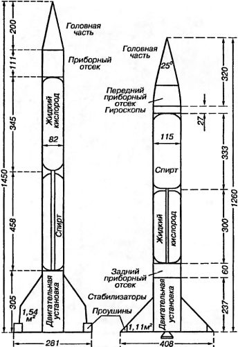
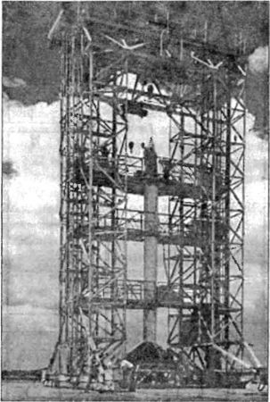
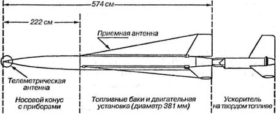

«Viking», «Aerobee» и другие ракеты
Интенсивные испытания ракет «Фау-2» вели еще и к тому, что их запас неуклонно сокращался. В первой серии программы испытаний было запущено 25 ракет. Затем прошла вторая серия испытаний. По-видимому, можно было бы завершить и третью серию, однако все, занятые в работах на полигоне, понимали, что недалек тот день, когда на стартовую площадку привезут последнюю ракету.
Требовались новые ракеты, и не просто ракеты «Фау-2», а новые типы, новые конструкции. В связи с этим возникли разногласия. Военные, естественно, хотели иметь баллистический снаряд большой дальности, ученые желали продолжать исследования верхних слоев атмосферы и мечтали о новой высотной ракете.
После бесконечных споров было выработано решение о подготовке двух новых и совершенно различных по типу ракет. Большую ракету было решено назвать «Нептуном» («Neptune»), а маленькую — «Венерой» («Venus»), но оба названия сохранились только на стадии проектирования. Когда же ракеты были изготовлены, они стали именоваться соответственно «Викинг» («Viking») и «Аэроби» («Aerobee»).
О существовании ракеты «Викинг» впервые стало известно в 1947 году; в то время она находилась в производстве на заводе фирмы «Глэн Л. Мартин» («Glenn L. Martin») в Балтиморе, а двигательная установка для нее «RMI 2000 °C1» изготавливались фирмой «Риэкшн Моторс» («Reaction Mo-tors») в Нью-Джерси. В январе 1949 года первые ракеты были отправлены на испытательный полигон Уайт Сандс, куда одновременно прибыли и некоторые сотрудники фирмы «Глэн Л. Мартин».
Хотя в ракете «Викинг» использовалось то же топливо, что и в «Фау-2», она значительно отличалась от немецкой ракеты. Первые ракеты «Викинг» представляли собой узкий цилиндр диаметром 82 сантиметра и длиной от 13,8 до 14,8 метра. Стартовый вес первого образца ракеты «Викинг» (4380 килограммов) был меньше сухого веса ракеты «Фау-2», испытываемой на полигоне Уайт Сандс. На ракете «Фау-2» устанавливались независимые топливные баки, а в ракетах «Викинг», которые строились кустарным способом, бак со спиртом был несущим, то есть стенки его являлись оболочкой ракеты. В последующих образцах ракеты «Викинг» бак для кислорода также делался несущим. Это не только позволило сэкономить на весе, но и ликвидировало промежутки между стенками бака и оболочкой ракеты, в которых при образовании течи могут скапливаться пары спирта и кислорода, что нередко приводит к взрыву.
В конструкции «Викинга» имелись и другие новшества, наиболее интересным из которых является метод управления полетом. От графитовых рулей здесь отказались главным образом потому, что они поглощали некоторую часть энергии двигателя. В ракетах «Викинг» двигатель устанавливался на карданном подвесе таким образом, что сервомоторы могли отклонять ось двигателя для компенсации случайного отклонения. Триммеры на стабилизаторах ракеты были сохранены для увеличения эффективности последних. Бачок для перекиси водорода в первых образцах ракеты «Викинг» принял форму трубы, обвитой с целью экономии места вокруг корпуса турбины. В отличие от «Фау-2» в «Викинге» зажигание осуществлялось без предварительной ступени.
Еще одна особенность, которая отличала «Викинг» от «Фау-2», заключалась в способе транспортировки по дорогам на небольшие расстояния — например, из сборочного цеха до стартовой площадки. Перевозка осуществлялась на так называемой тележке Бэрра, которая состояла из прямоугольного ажурного каркаса для хвостовой части ракеты и носового ярма. В нижней части носового ярма имелось одно, а у хвостового каркаса — два колеса; таким образом, ракета «Викинг» перевозилась на приспособлении, напоминающем шасси современного пассажирского самолета. Буксировка осуществлялась автомашиной типа «джип», установка в вертикальное положение производилась с помощью крана «Гэнтри». Первоначально «Викинги» перевозились в полностью собранном виде, но в дальнейшем головная коническая часть транспортировалась отдельно.
При подготовке ракет к пуску выявились все те мелочи и недостатки, которые всегда обнаруживаются только на испытательной площадке. 7 марта 1949 года была предпринята попытка провести стендовые огневые испытания, однако за 15 минут до начала все приготовления пришлось прекратить вследствие того, что отрывной штекер головной части ракеты плохо входил в свое гнездо. На следующий день это было исправлено, но перед самым испытанием из-за неплотного закрытия дренажных клапанов бака с кислородом весь сжатый азот вытек из баллонов. Потом лопнул трубопровод высокого давления, и на устранение этой неисправности было затрачено еще три дня.
Первый пуск был назначен на 28 апреля, но его пришлось отложить из-за плохой погоды сначала на один, а потом еще на несколько дней. 3 мая 1949 года первая ракета «Викинг» все же поднялась в воздух после некоторой задержки, вызванной неисправностью дренажных клапанов. Подъем прошел удачно, однако через 54 секунды после старта, когда ракета была уже на высоте 27 километров, двигатель выключился. По этой причине максимальная высота полета через 160 секунд после старта составила всего лишь 80 километров; максимальная скорость, показанная ракетой, равнялась 3600 км/ч.
Все были несколько разочарованы. Хотя официальная программа и не предусматривала, что «Викинг» превысит рекорд «Фау-2», однако все этого ожидали. Ведь полезная нагрузка составляла всего 209 килограммов, и, согласно расчетным таблицам, ракета должна была набрать высоту около 300 километров.
Причину неудачи должны были прояснить испытания второй ракеты «Викинг». Ее стендовые огневые испытания прошли быстро и без особых затруднений. Запуск был намечен на 26 августа. В 11 часов утра представителей прессы попросили покинуть стартовую площадку, а в 11 часов 29 минут поступила команда: «Огонь!» Воспламенитель загорелся, посыпались искры, отрывной штекер отделился от носовой части ракеты, но двигатель не работал. Через 10 секунд была нажата кнопка «стоп». При осмотре ракеты выяснилось, что жидкий кислород вытек и залил турбину, заморозив клапаны турбонасосного агрегата.
Запуск ракеты был перенесен на 6 сентября. На сей раз ракета взлетела. Операторы тревожно поглядывали на стрелки приборов, боясь новой неудачи. Через 19 секунд двигатель перестал работать. Достигнутая высота составила 51,5 километра

Несмотря на неудачу, этот пуск был весьма полезным, так как удалось совершенно точно установить, что прекращение работы двигателя в какой-то степени связано с недостаточной герметичностью корпуса турбины. После испытаний турбины на заводе было установлено, что корпус турбины можно сделать сварным и таким образом предотвратить даже малейшую утечку пара. Действительно, после сварки корпуса никаких утечек не наблюдалось; прекратились и преждевременные остановки двигателя.
Запуск новой улучшенной ракеты назначили на 9 февраля 1950 года. Через 34 секунды после старта радиолокационная станция слежения сообщила, что «Викинг» № 3 слишком далеко отклонился к западу. Нужно было остановить двигатель, иначе ракета упала бы за пределами полигона. Однако ракете дали возможность пролететь еще некоторое расстояние, и только через минуту после старта двигатель был выключен. Максимальная высота, достигнутая ракетой, составила 80 километров.

Запуск «Викинга» № 4, состоявшийся 7 мая с борта военного корабля «Нортон Саунд», был еще более удачен. Ракета поднялась на 170 километров, несмотря на очень большую полезную нагрузку. Она упала в море через 435 секунд после старта, примерно в 13 километрах от корабля. Это был первый вполне успешный пуск ракеты типа «Викинг».
Начиная с «Викинга» № 8, геометрические характеристики этих ракет подверглись существенным изменениям. Теперь ракета имела диаметр 115 сантиметров и длину от 12,6 до 13,7 метра. Кроме того, ее масса была распределена лучше, чем в первых ракетах «Викинг». Вследствие увеличения диаметра хвостового отсека бачок для перекиси водорода уже не нужно было обвивать вокруг турбины. Далее, подготовленный к запуску «Викинг» № 8, равно как и другие последующие ракеты этого типа, опирался при установке на стартовый стол не на перья стабилизатора, а на свое основание, и для его крепления требовалось всего лишь два ветровых болта.
Всего было запущено 12 ракет «Викинг». При этом максимальная высота полета составила 254 километра
Осенью 1947 года в Уайт Сандс появилась еще одна новая ракета — «Аэроби». Начало ее созданию было положено в лаборатории прикладной физики Университета Джона Гопкинса Работу финансировало артиллерийско-техническое управление ВМС США, непосредственно конструирование осуществлялось фирмой «Аэроджет» и «Дуглас Эйркрафт» («Douglas Aircraft»). В ракете была использована компоновочная схема ракеты «ВАК-Корпорал», то есть схема жидкостной ракеты со стабилизаторами и стартовым ускорителем на твердом топливе, но без системы наведения. Ракета «Аэроби» имела длину около 5,7 метра (без ускорителя) и диаметр 381 миллиметр.
Так же, как и в ракете «ВАК-Корпорал», здесь в качестве топливных компонентов применялись анилин с примесью фурфурилового спирта и азотная кислота. Подача топлива в двигатель осуществлялась под давлением с помощью наддува баков гелием. Охлаждался двигатель за счет циркуляции топлива в рубашке камеры сгорания и сопла. Ускоритель длиной 1,8 метра разгонял ракету до скорости 305 м/с и затем сбрасывался, после чего вступал в действие маршевый двигатель, работавший на жидком топливе в течение 34 секунд. В момент прекращения работы двигателя ракета имела скорость 1250 м/с и поднималась на высоту порядка 29 километров, если траектория полета приближалась к вертикальной. Максимальная высота подъема ракеты при полезной нагрузке в 68 килограммов обычно составляла около 115 километров. Вес полезной нагрузки колебался от 45 до 113 килограммов. Показания бортовых приборов ракеты передавались частично с помощью телеметрической системы, частично снимались после спасения приборного (носового) отсека.
К испытаниям на полигоне Уайт Сандс ракета «Аэроби» была готова осенью 1947 года. После предварительного запуска трех макетов, 24 ноября 1947 года, была запущена первая ракета «Аэроби». Вследствие большого рысканья через 35 секунд полета пришлось по радио «отсечь» двигатель для того, чтобы избежать приземления ракеты за пределами полигона. В результате этого максимальная высота составила всего лишь 58 километров. Второй пуск ракеты «Аэроби» состоялся 5 марта 1948 года и прошел весьма успешно. Приборы для измерения направленной интенсивности и углового распределения космических лучей были подняты на высоту 113 километров, что дало возможность получить новые научные данные. В апреле был осуществлен еще один запуск на такую же высоту. При этом удалось произвести замеры магнитного поля Земли. Четвертая ракета была оборудована аэрофотокамерами и запущена 26 июля 1948 года. Полет и на этот раз протекал нормально, максимальная высота составила свыше 110 километров.
Поскольку в ходе этих первых испытаний ракета «Аэроби» показала достаточную надежность и потому, что она была конструктивно весьма несложной и не требовала больших производственных затрат, она быстро стала основной «тягловой силой» в работе по исследованию верхних слоев атмосферы. Первоначально у сотрудников полигона на этот счет имелись некоторые опасения, ведь ракета «Аэроби» не имела никакой системы управления, да и устойчивость ее обеспечивалась всего лишь тремя неподвижными перьями стабилизатора. Тем не менее из 24 ракет «Аэроби», запущенных до конца 1949 года, только 3 сбились с расчетной траектории, и только в одном случае (при первом пуске) пришлось использовать аварийную отсечку двигателя.
Имелось несколько модификаций ракет «Аэроби», которые отличались друг от друга мощностью маршевого двигателя и весом полезной нагрузки; соответственно они имели разную высоту подъема.

В 1952 году фирма «Аэроджет» обратилась к руководству ВВС и ВМС США с предложением о постройке еще более совершенной ракеты типа «Аэроби» за счет использования магния и нержавеющей стали марки «410». Предложение было принято, и началась разработка новой ракеты, которой было дано название «Аэроби-Хи» («Aerobee-Hi»). Первый пуск этой ракеты состоялся 2 мая 1956 года на полигоне Уайт Сандс. Ускоритель ракеты на испытаниях действовал нормально, однако топливный клапан системы питания не открылся. Ракета поднялась вверх на 3 километра, но затем стала падать и при ударе о землю взорвалась. У второй ракеты, испытанной 8 мая, двигатель проработал 51 секунду, и отсечка топлива была произведена на высоте 24 километров. Ракета подняла полезный груз весом 54 килограмма на высоту 187 километров. Результаты пуска следующей ракеты (4 июня) оказались довольно обескураживающими: дело в том, что топливный клапан открылся, вероятно, только частично, поскольку двигатель не обеспечил необходимой тяги, и ракета поднялась на высоту всего лишь 59 километров. Еще одна ракета «Аэроби-Хи», запущенная 29 июня, достигла высоты 262 километров.
Наряду с ракетами «Викинг» и «Аэроби» на полигоне Уайт Сандс испытывались и другие ракеты. Одной из них была ракета «Конвейр МХ-774» («Convair МХ-774»), изготовленная фирмой «Консолидейтид-Валти» («Consolidated-Vultee») по заказу ВВС США. Эта ракета, очень похожая на «Фау-2», но имевшая несколько меньшие размеры (длина — 9,75 метра, диаметр — 16 сантиметров) и трехперый стабилизатор, выполненный в виде коробчатого змея. Она предназначалась для тренировочных занятий стартовых расчетов и для опробования систем питания и наведения, но могла быть использована и для исследования верхних слоев атмосферы, поскольку ее потенциальный потолок составлял 160 километров. Впервые она была запущена летом 1948 года.
Тогда же состоялся и первый запуск небольшой ракеты «Нэйтив МХ-770А» («NATIV», сокращение от «North American Test Instrument Vehicle», что означает «Североамериканская опытная инструментальная система»), изготовленной фирмой «Норт Америкен» («North American»). Ее диаметр составлял 46 сантиметров, а высота — 505 сантиметров; стартовый вес ракеты равнялся 560 килограммам. Носовой части ракеты придана заостренная иглообразная форма Поверхности управления прикреплены к четырем крестообразно расположенным стабилизаторам. При пуске с вышки и при помощи ускорителя на твердом топливе ракета «Нэйтив» могла подняться на высоту 15 километров.